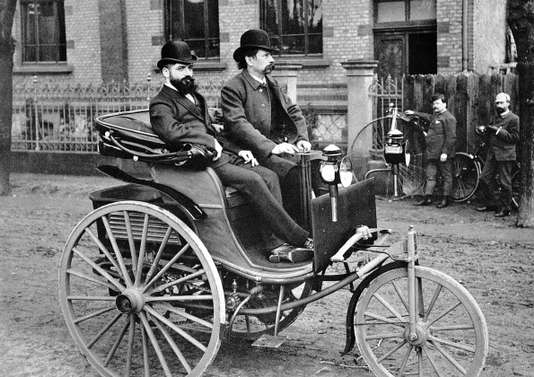
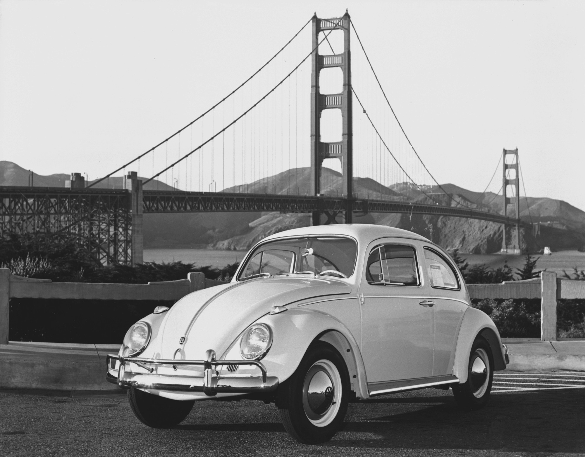

Motor-car pioneers Karl Benz (who later went on to start Mercedes-Benz) and Nikolaus Otto developed four-stroke internal combustion engines in the late 1870s, with Benz fitting his design to a coach in 1887, which led to the modern day motor car. By 1901, Germany was producing about 900 cars a year.[3] In 1926, Daimler-Benz was formed from the predecessor companies of Karl Benz and Gottlieb Daimler and produced cars under the marque of Mercedes-Benz. In 1916 BMW was founded, but didn't start auto production until 1928.

American economist Robert A. Brady extensively documented the rationalization movement that shaped German industry in the 1920s, and although his general model of the movement applied to the automotive industry, the sector was in poor health in the later years of the Weimar Republic. Germany's slow development of the industry left the market open for major American auto manufacturers such as General Motors who took over German company Opel in 1929, and the Ford Motor Company which maintained the successful German subsidiary Ford-Werke, beginning in 1925.[4]
The collapse of the global economy during the Great Depression in the early 1930s plunged Germany's auto industry into a severe crisis. While eighty-six auto companies had existed in Germany during the 1920s, barely twelve survived the depression, including Daimler-Benz, Opel and Ford's factory in Cologne. In addition, four of the country's major car manufacturers: Horch, Dampf Kraft Wagen (DKW), Wanderer and Audi formed a joint venture known as the Auto Union in 1932, which was to play a leading role in Germany's comeback from the depression.[5]
The turnabout for the German motor industry came about in the mid 1930s following the election of the Nazi Party to power. The Nazis instituted a policy known as Motorisierung [de] ("motorization"), a transport policy which Adolf Hitler himself considered a key element of attempts to legitimise the Nazi government by raising the people's standard of living.
In addition to development and extensions of major highway schemes (which saw the completion of the first Autobahn in 1935), the Volkswagen project was also conceived to design and construct a robust but inexpensive "people's car", the product of which was the Volkswagen Beetle, launched in 1937.

A new city (known as Wolfsburg from 1945) was developed around the factory to house its huge workforce.[4]